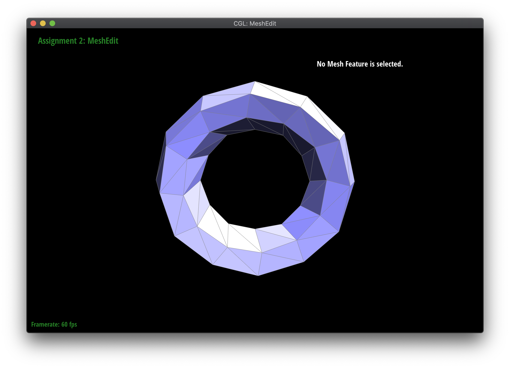
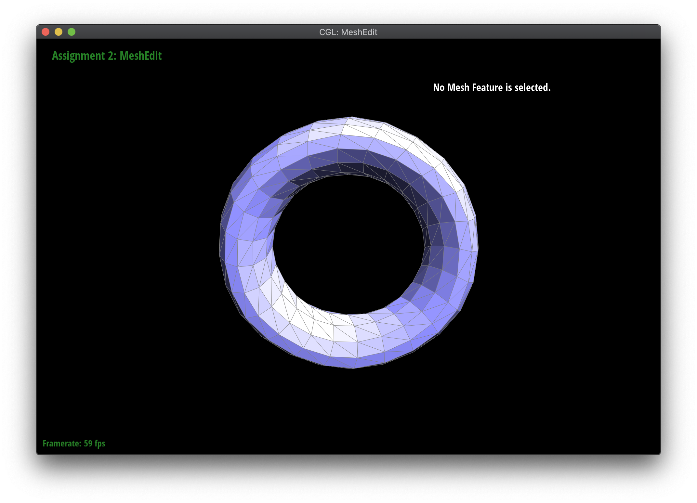
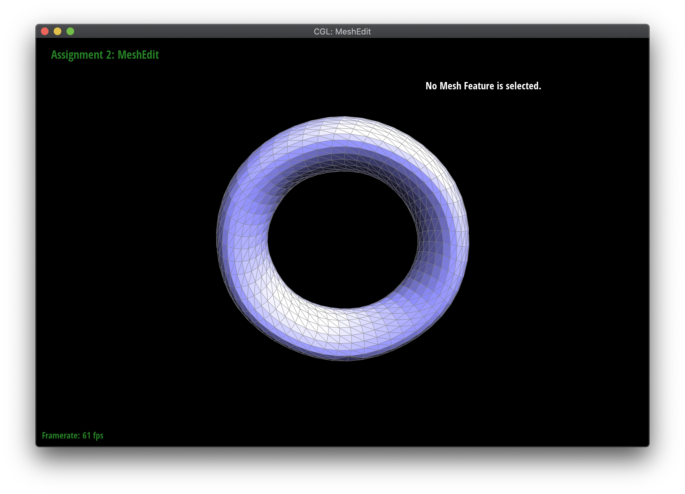
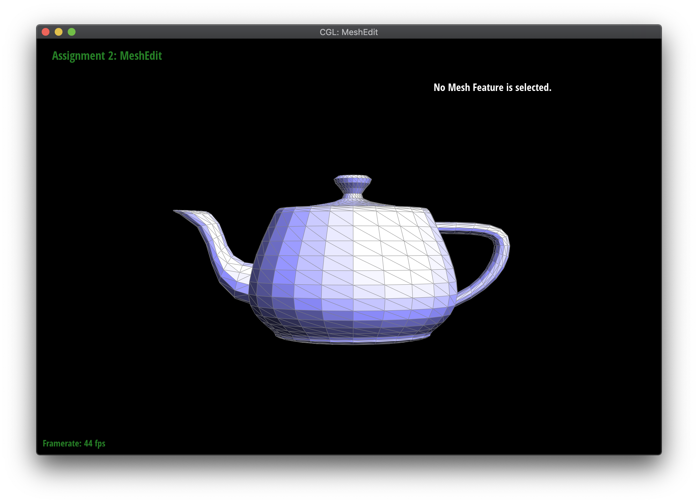
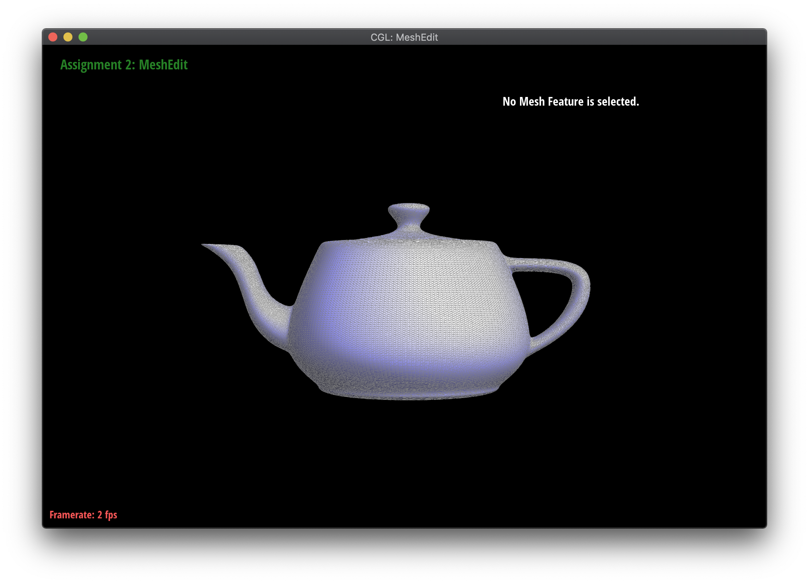

**This repository contains my project writeups from the UC Berkeley computer graphics course. If you are an employer interested in viewing my project source code, please contact me privately.**
CS 184: Computer Graphics and Imaging, Spring 2020
Helen Yang
Project 1: Rasterizer
Rasterizing triangles with various antialiasing methods, use of homogenous and barycentric coordinates, texture mapping with mipmaps.
Project 2: MeshEdit
Bezier curves and surfaces, halfedge mesh operations, loop subdivision.

|
 |  |  |
|  |

|

|
 |
Project 3-1: PathTracer
Path tracing with ray-primitive intersection and bounding volume hierarchy for efficiency.

Project 3-2: Advanced PathTracer
Mirror and glass materials, depth of field.

|

|
Project 4: Cloth Simulation
Mass and spring system, self collision, various shaders.